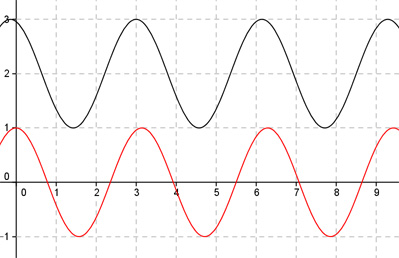

Aufgabe 274 Bestimmen Sie b, c und d für den dargestellten Graphen der Form y = a * cos (b * (x + c)) + d.  Abgelesen: Periode p = п (von 3 bis 6,14) 2п 2п |b| = ---- = ---- = 2 p п b = 2 oder -2 wegen cos(x) = cos(-x) acos(2(x + c)) + d oder acos(-2(x + c)) + d Verschiebung von Punkt (0|0) in (3|2) --> Abgelesen: Verschiebung entlang x = 3 um 2 --> d = 2 acos(2(x + c)) + 2 oder acos(-2(x + c)) + 2 Abgelesen: Verschiebung entlang y = 2 um 3 nach rechts --> c = -3 acos(2(x - 3)) + 2 oder acos(-2(x - 3)) + 2 Abgelesen: |a| = 1 Keine Spiegelung an der x-Achse --> a = 1 --> y = cos(2(x - 3)) + 2 oder y = cos(-2(x - 3)) + 2 Zum Vergleich: cos(2x)